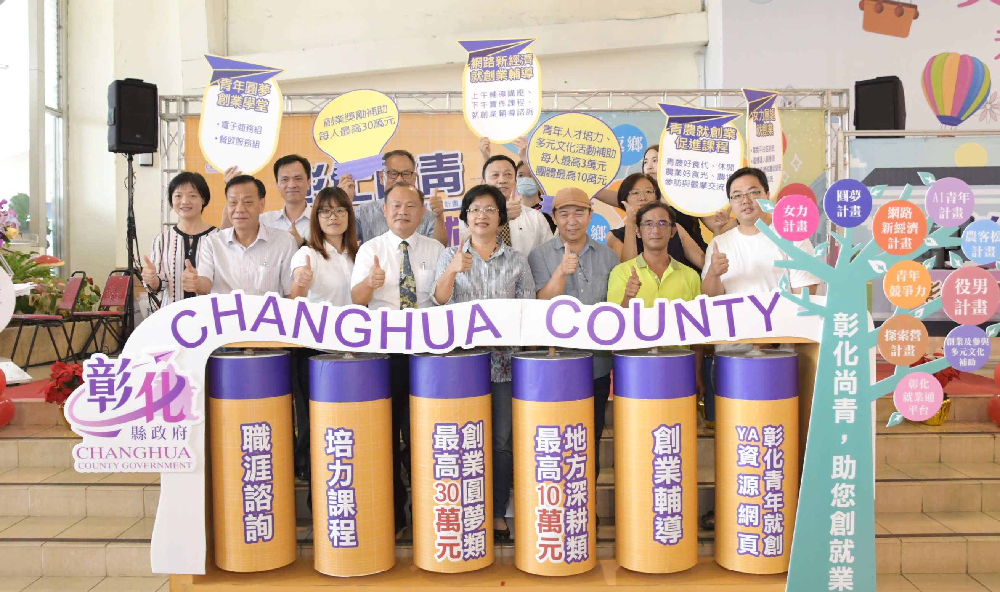

新聞內容 :
彰化縣政府9日上午在縣府中庭召開「彰化尚青 助您創就業」記者會，彰化縣長王惠美宣布啟動青年創業補助，王縣長說，縣府為了幫助青年，留鄉、返鄉、進鄉，創意、創生、創業，特別訂定「彰化縣促進青年結合在地特色資源留鄉返鄉進鄉創業及多元文化補助作業要點」，編列1,000萬元，感謝彰化縣議會議長謝典林及議員支持在追加減預算中編列，一起幫助青年圓夢，這個計畫共有二大類，一是「創業圓夢類」每人最高可補助30萬元，提供想創業的青年能夠有充裕的創業資金，運用在創業初期所需的創業諮詢、產品開發、品牌行銷、店面租金等開銷補貼，歡迎18歲以上45歲以下，且已上滿30小時創業研習課程的縣籍青年，即日起都可申請，二是「地方深耕類」，補助舉辦青年創業相關主題式論壇，每人補助3萬元或青年團體每案10萬元，舉辦主題式論壇，讓青年在創業過程中能夠彼此分享創業心得與歷程，協助創業青年能夠有多元的管道獲得充分的創業技巧與資源，幫助青年在彰化圓夢。
王縣長說，青年是國家的希望，縣府希望做年輕人最好的依靠，所以縣府在3月29日成立青年發展暨就業服務科，以專門窗口跟青年銜接，提供年輕人所需要的各項服務，讓青年了解中央與地方政府對年輕人的照顧。這次1000萬元的圓夢計畫除了「創業圓夢類」、「地方深耕類」以外，還有圓夢貸款計畫，利息由縣府補貼，另外縣府也盤點商圈部分，如果承租店面，縣府每個月補助1萬元，希望年輕人能夠透過縣府多方面的協助，創業更順利。
王縣長表示，縣府希望彰化縣的年輕人留鄉一起努力，也歡迎所有年輕人在創業過程中可與縣府連結多多利用，縣府也開設非常多創業研習課程，包括青年圓夢學堂、青農就創業促進、網路新經濟、女力展翅就創業促進，課程內容多元有助於提高日後創業成功率，今年也針對青農也特別創辦「彰農學堂」，以提升農民專業品質及產業發展。不僅如此，縣府閒置空間再利用，繼去年南郭宿舍群2、3號啟用，今年鹿港和興派出所宿舍群也將修復完成，將提供另一處青創基地供青年朋友進駐使用。
右舍咖啡負責人林雅啟現身說法指出，他的咖啡館經營12年了，也吸引很多想要開咖啡館的人前來詢問，重點還是在於創業金貸款、創業過程學習、場地租金、人事管銷成本、原物料、創業經營等問題，這些問題怎麼解決，縣府網站提供很多協助創業夥伴們解決這些問題的方法，現在也有開設相關課程分享創業經驗，不要讓夥伴們在創業這條路上跌倒，因為創業維艱、若未成功，就可能化為烏有，他以過來人能夠體會這種心情，也會盡自己力量幫助這些創業夥伴。
縣府勞工處表示，縣府也了解很多青年懷抱創業夢想，可是又不確定自己適不適合出來創業，因此縣府8個就業服務台除了可以辦理職缺媒合以外，也有專業的就業服務員提供職涯諮 詢服務，協助青年透過專業評估確立未來職涯方向。
與會貴賓還有勞動部勞發署彰化就業中心督導李玉如、縣府勞工處長吳蘭梅、行政處長王玫升、法制處長黃耀南、新聞處長李俊德、經濟暨綠能發展處副處長王盟貴、新聞處副處長張志昇、右舍咖啡代表人林雅啟、解憂設計代表人許晉榮、彰化縣農會督導楊金錫、青農聯誼會秘書長吳武銘、社團法人彰化縣終身學習職能協進會代表人林碧玉、彰化縣青少年教育發展協會代表人林瑞育、彰化縣電腦商業同業公會理事長林澍琪、台灣前瞻勞動力服務協會講師陳玉媚、救國團彰化團委會總幹事葉慶壽、彰化縣職業總工會理事長許川林、建國科大主任廖仁傑、毅嘉管理顧問有限公司代表人劉士豪、彰化縣商業總會理事黃智輝、大葉大學推廣教育處副處長莊基仁、電腦公會常務理事袁紹忠、地方仕紳等人。
